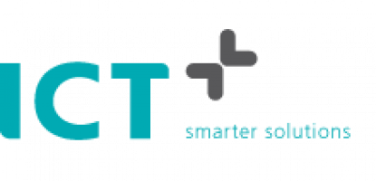

Dit gedeelte van mijn portfolio gaat over mijn opleiding. Ik ben nu nog in de beginfase van mijn opleiding ik zit nu in de eerste van het MBO en in de vierde van de Mavo. Ik zit in een klas die een versneld traject volgen waardoor we examen hebben gedaan in de derde en we nu al op het mbo zitten ipv elke dag in de vierde op het Insula. Op het davinci zit ik in een klas met allemaal andere mensen die de zelfde opleiding volgen geaamd aplicatie ontwikkelaar deze opleiding is een opleiding die je kan volgen op verschillende niveau's en ik volg deze op het MBO niveau 4. Omdat ik nog in de beginfase zit van deze opleiding heb ik nog niet zo veel ervaring met wat er allemaal gaat gebeuren binnen deze opleiding, maar ik kan wel vertellen wat ik verwacht wat er gaat gebeuren. Ik denk dat er heel veel aan ons word verteld en dat we heel veel moeite moeten doen om het bij te houden omdat het MBO heel aders is dan het voortgezet onderwijs zelfs nog groter dan de overgang van de basisschool naar het voortgezet onderwijs. Dus ik ga een zware tijd te gemoet komen. Mijn motivatie is dat er heel veel banen zijn die met deze opeiding te maken hebben en dat deze opleiding de toekomst is en dat motiveert mij. Thuis werk ik als ik met school bezig ben aan het proberen te begrijpen wat elke code betekend zodat als je een opdracht hebt je weet wat je aan het typen ben en niet dat je zomaar iets opschrijft.
